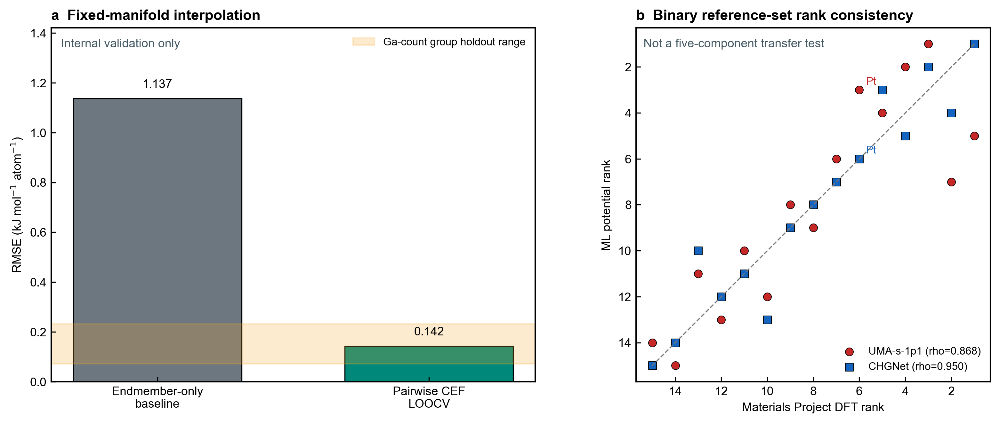

Bounded validation report
System: pt3_gainsnzn_bounded_validation Status: passed
Validated scope. Software configuration, interpolation inside the fixed L12-Pt3(Ga,In,Sn,Zn) representative-occupancy manifold, and rank consistency on the bundled M-Ga binary reference set.
Non-claim. This report does not establish transferability to a new host, prototype, or bonding class and does not predict synthesizability.
Claim boundary
| software_configurability | demonstrated_for_bundled_inputs | Bundled modules are driven by external JSON inputs. |
|---|---|---|
| within_manifold_interpolation | validated_internal | Validation is internal to the fixed L12 composition manifold. |
| binary_energy_rank_consistency | observed_reference_set | Agreement is observed only on the bundled binary reference set. |
| new_host_or_prototype_transferability | not_evaluated | No cross-host or cross-prototype validation is supplied. |
| nonmetal_compound_transferability | not_evaluated | N/O/S/P systems require replacement or revalidation of scientific modules. |
| synthesizability | not_predicted | Continuous calculations prioritize candidates; they do not classify synthesis success. |
SI-ready visual evidence

Fixed-manifold validation
| Compositions | 165 |
|---|---|
| Pair parameters | 6 |
| Training R2 | 0.999277 |
| Training RMSE | 0.135821 |
| Endmember-only RMSE | 1.136521 |
| Non-endmember LOOCV RMSE | 0.142250 |
| Group-holdout RMSE range | 0.071806-0.231962 |
This is an internal interpolation and ablation check on the supplied UMA table, not an external validation of UMA.
Three-backend comparison
| Subset | Pair | N | Spearman rho | RMSE | Top-k overlap | Reversals | Reversal fraction |
|---|---|---|---|---|---|---|---|
| all_hosts | mp_dft__uma_s_1p1 | 15 | 0.867857 | 10.483849 | 4 | 15 | 0.142857 |
| all_hosts | mp_dft__chgnet | 15 | 0.950000 | 6.062754 | 5 | 8 | 0.076190 |
| all_hosts | uma_s_1p1__chgnet | 15 | 0.903571 | 8.841320 | 4 | 13 | 0.123810 |
| size_compatible_hosts | mp_dft__uma_s_1p1 | 12 | 0.951049 | 5.966177 | 4 | 5 | 0.075758 |
| size_compatible_hosts | mp_dft__chgnet | 12 | 0.937063 | 5.444194 | 5 | 5 | 0.075758 |
| size_compatible_hosts | uma_s_1p1__chgnet | 12 | 0.972028 | 7.707815 | 4 | 4 | 0.060606 |
Pairwise agreement of binary M-Ga formation-enthalpy rankings on the bundled reference structures.
Limitation: This is a heterogeneous binary reference-set consistency check, not a direct accuracy validation of the five-component energy landscape or a synthesis-success test.
Module contracts
manifold_regression
Evidence: internal_interpolation_validation
Excluded: energy-backend accuracy; global phase stability; new-host or new-prototype transferability; synthesizability
energy_backend_comparison
Evidence: reference_set_consistency
Excluded: universal potential accuracy; five-component transferability; synthesis classification